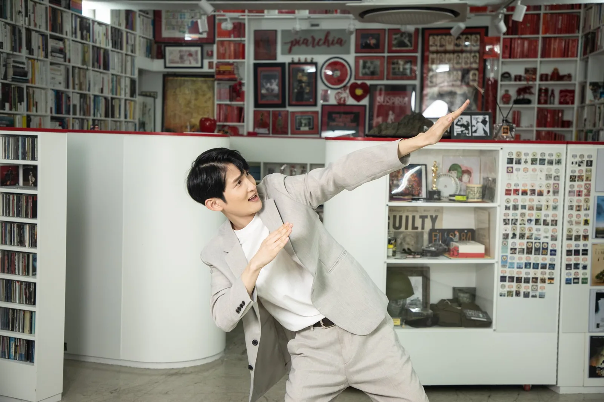
01망에서 콘텐츠, AI 검색까지
망에서 콘텐츠, AI 검색까지
미디어 전 과정을 겪은 실무자
통신 인프라를 설계해 팔았고, 그 망 위의 상품을 알렸고, 콘텐츠를 직접 만들었고, 이제는 AI가 콘텐츠를 고르는 방식을 연구합니다.
통신·네트워크 인프라(Telco)부터 55만 구독자 규모의 유료방송·유튜브 오리지널 채널 기획과 메인 MC, 생성형 AI 검색 최적화(GEO) 및 AI Native 콘텐츠 제작까지 미디어·ICT 생태계 전반을 아우르는 실무형 디렉터입니다.
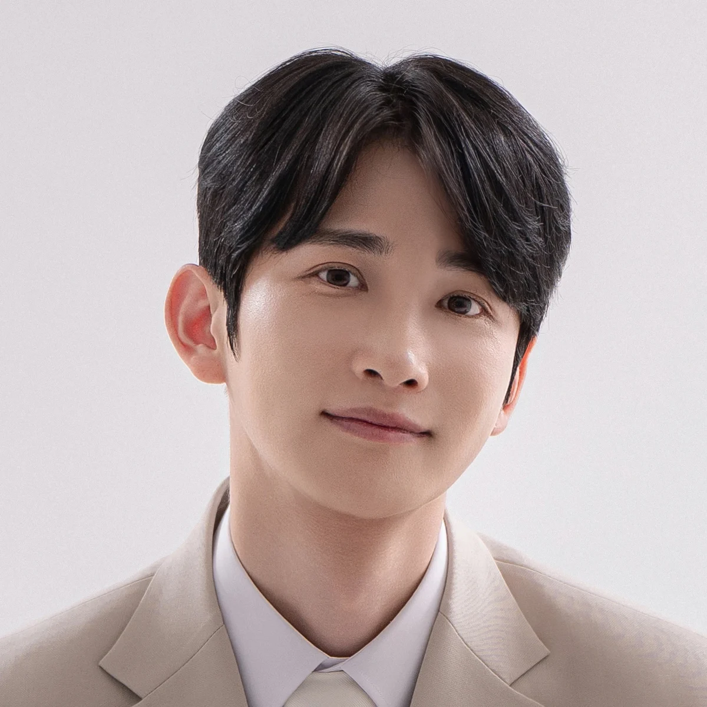
함께 일하고 출연한 곳
《B tv 이동진의 파이아키아》 · 2020–2024 · 광고비·구독 이벤트 없이
약 300편 · 4년
8년 장기계약 · CEO SR 추천
SK브로드밴드 2017–2025
누적 조회수 · 58편 · 2021
생소한 니치 장르로 최고 63만 회 · 2019–2026
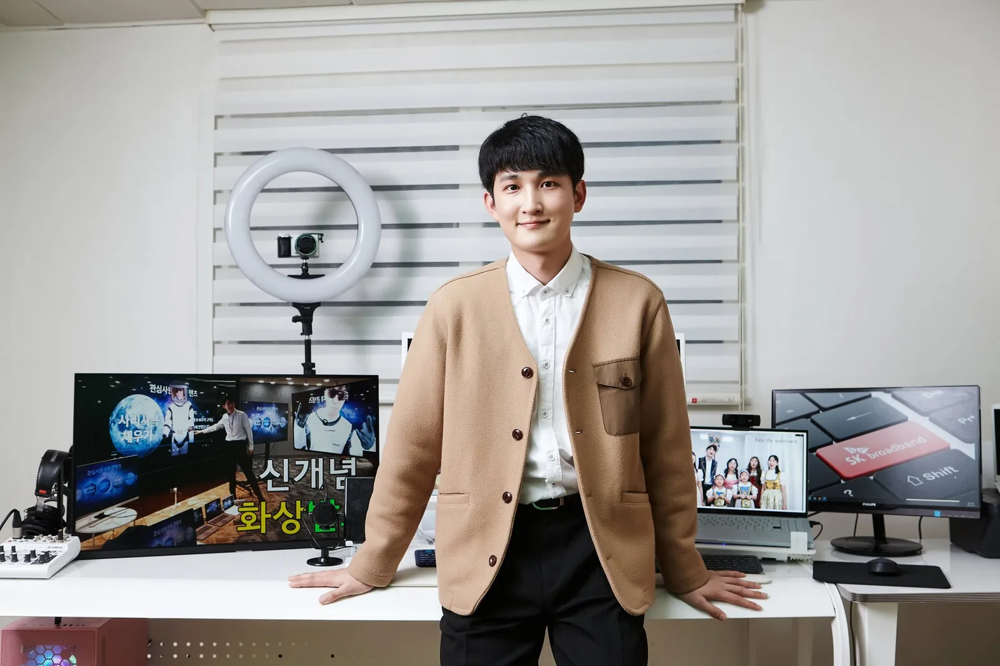
사내 웹진 B log Vol.63 커버스토리 「홍연의 상상은 현실이 된다」

통신 인프라를 설계해 팔았고, 그 망 위의 상품을 알렸고, 콘텐츠를 직접 만들었고, 이제는 AI가 콘텐츠를 고르는 방식을 연구합니다.
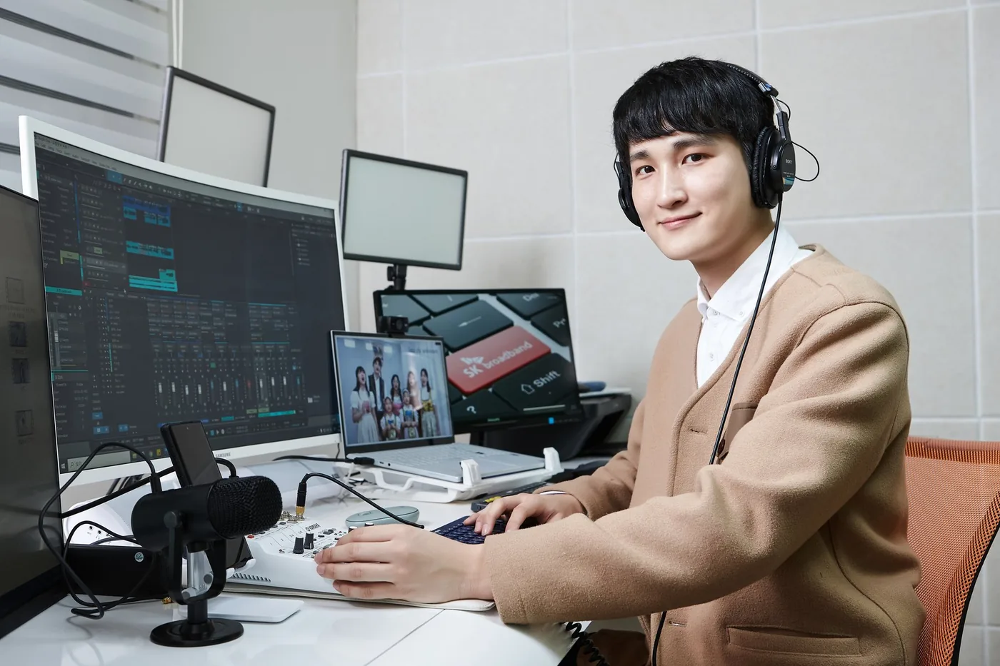
광고비 0원 틱톡 1,960만 회, 자체 제작 중간광고 약 54억 원 매체 효과, 105억 원 B2B 수주. 실패한 파일럿 데이터까지 보여 드립니다.
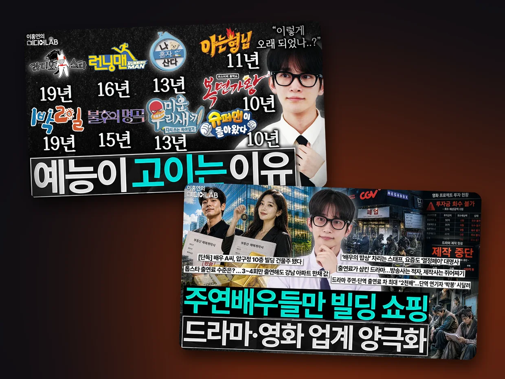
4K 스튜디오에서 만드는 《이홍연의 미디어LAB》, 대학원의 AI 검색 연구, 체인시프트의 GEO 실무. 강의 내용은 늘 오늘의 현장입니다.
항목을 누르면 해당 경력 화면으로 이동합니다.
막대 길이는 실제 기간 비율입니다. 점선은 현재(2026년 10월).
디지털 플랫폼 / 검색 최적화(GEO) 실무
AI Native 콘텐츠 워크플로우
뉴미디어 콘텐츠 제작 및 유튜브 등 콘텐츠 기획
숏폼 콘텐츠 제작 및 바이럴 전략
OTT·영화·방송 등 미디어 산업 트렌드 및 플랫폼 비즈니스
디지털 마케팅 및 B2B/B2C 콘텐츠 브랜딩·바이럴 전략
ICT·네트워크 인프라와 미디어 유통 구조의 이해
체인시프트는 ChatGPT·Gemini·네이버 AI 브리핑 같은 AI 검색에서 브랜드가 어떻게 언급되고 인용되는지 측정하는 GEO 스타트업입니다. 이곳에서 콘텐츠 제작을 소재 발굴부터 배포까지 9단계로 나누고, 초안과 반복 작업은 AI가, 판단과 승인은 사람이 맡는 워크플로우를 설계했습니다. 받아쓰기·컷 편집·모션그래픽처럼 개인 채널 《이홍연의 미디어LAB》에서 먼저 써 본 공정을 이 설계에 반영했습니다.
AI SEARCH · GEO SaaS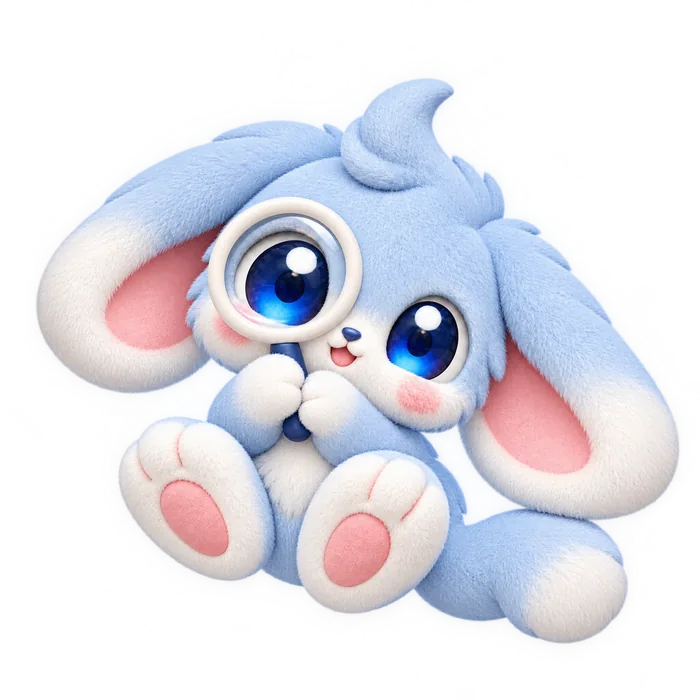
"뇌피셜 말고 AI피셜." 댓글·DM으로 의뢰받은 질문을 AI에게 1,000번 대신 묻고 브랜드 언급률 랭킹으로 보여 주는 숏폼 코너를 설계했습니다. 마지막 장면은 'AI 추천 진단 신청'으로 이어지게 했고, 캐릭터는 생성형 AI로, 15초 세로 샘플 릴스 시안은 Claude와 HyperFrames로 만들었습니다.
국내외 뉴스, 네이버 데이터랩, 유튜브 급상승 AI 채널을 AI가 모읍니다. 쓸 소재는 사람이 고릅니다.
Claude가 초안을 쓰고 ChatGPT가 교차 검토합니다. 초안은 사람이 승인합니다.
이미지와 영상 소스는 생성형 AI로 만들고, HyperFrames 코드로 조립합니다. 샷리스트는 생성 전에, 영상은 미리보기로 사람이 승인합니다.
마감은 사람이 합니다. 쇼츠와 블로그 초안은 AI가 만들고, 공개와 발행은 사람이 정합니다.
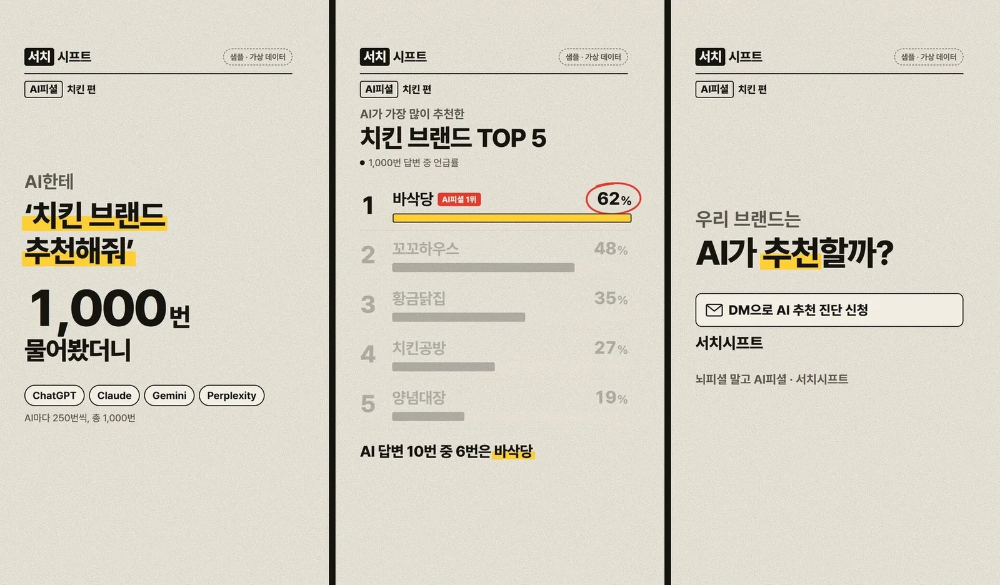
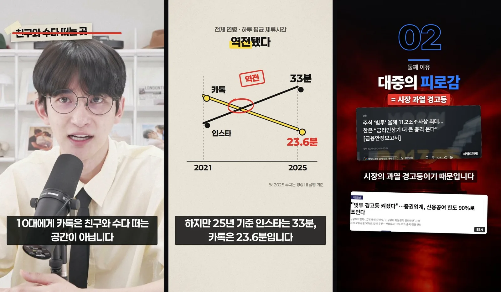
TIPS 선정, AWS 마켓플레이스 등록, 이용 브랜드 수는 체인시프트의 회사 이력입니다. 출처: trychainshift.ai 및 언론 보도
영화평론가 이동진과 함께한 SK브로드밴드의 유튜브 오리지널 채널을 공동 기획하고, 메인 MC로 4년간 진행했습니다. 사내 구성원과 프리랜서로 인하우스 제작팀을 꾸리고, 주제와 썸네일, 중간광고, 성과 분석까지 데이터로 운영했습니다. 같은 해에는 직접 기획하고 만든 캐릭터 'B봇'으로 SK그룹 영상 공모전 대상을 받았습니다.
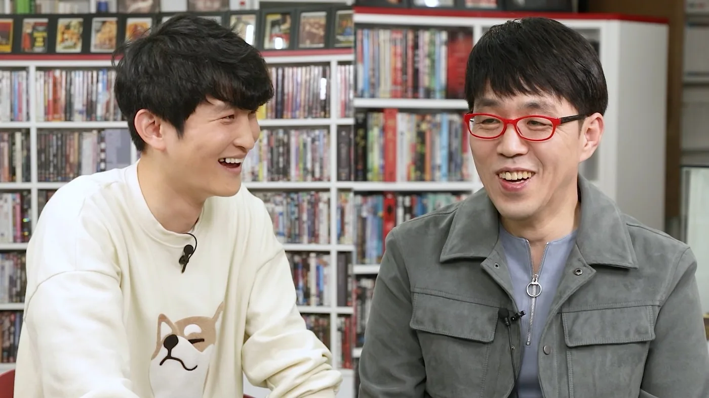
채널 보기"한국 전체 유튜브 채널 중 상위 1%, 영화 평론 유튜브 채널 중 1위"소셜 미디어 데이터 분석 서비스 기준
'Best Creator를 찾아라' 공모전. 인간형 IPTV 캐릭터 'B봇'을 직접 기획하고 만들어 SK브로드밴드와 SK그룹의 역사를 5분씩 풀어냈습니다.
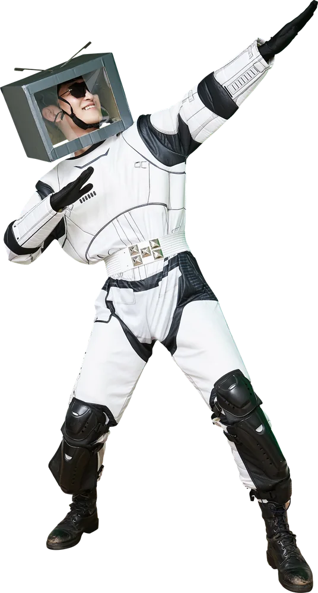
약 300편 · 정기 콘텐츠와 쇼츠
2020.08–2024.07
구독 이벤트 없이
반응률 2.0% · 경쟁 통신사 채널 대비
단위: 만 명 · 출처: 사내 리포트, 언론 보도(2024.01) · 점선 구간(55만)은 MC 하차 시점(2024.07) 본인 집계
조회수 2026.08 기준
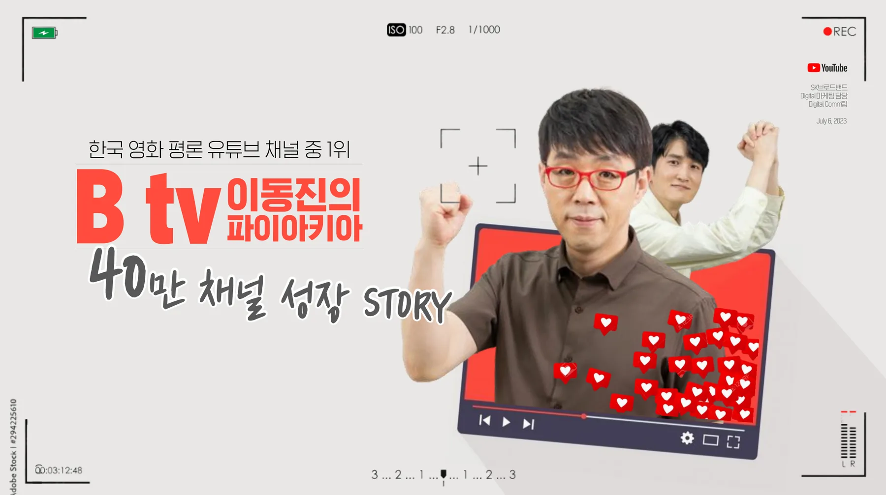
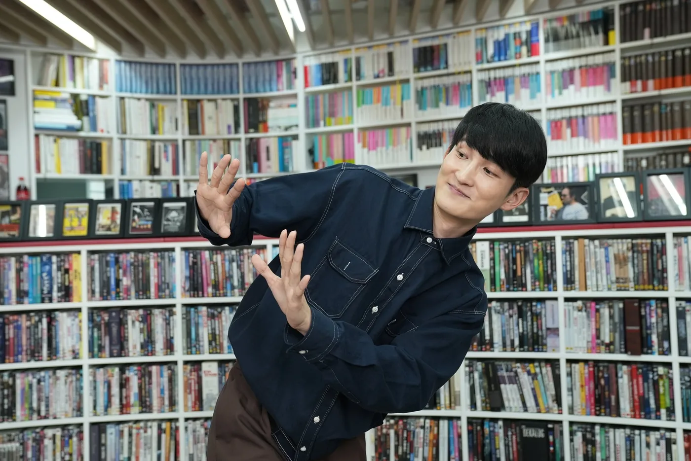
《B tv 이동진의 파이아키아》 Magazine(2023.07, 팀 공동 제작)과 스튜디오 촬영 현장
2019년 3월 '요들랜드TV, 쉽게 배우는 요들'을 열었습니다. 요PD로서 콘셉트와 출연진 섭외, 진행, 음향 믹싱, 편집, 썸네일 디렉팅까지 맡아 영상 15편 만에 구독자 1.1만 명, 편당 평균 조회수 약 10만 회(2020.10 기준)를 만들었습니다. 2026년 6월에는 기획형 콘텐츠로 포맷을 바꿔 시즌 2를 시작했고, 미디어·플랫폼 이슈를 해설하는 《이홍연의 미디어LAB》도 직접 만들고 있습니다.

 #115:09유튜브 천만 요들소녀가 한국에서 요들언니와 요들송으로 현피떴다?!조회수 63만회 · 7년 전
#115:09유튜브 천만 요들소녀가 한국에서 요들언니와 요들송으로 현피떴다?!조회수 63만회 · 7년 전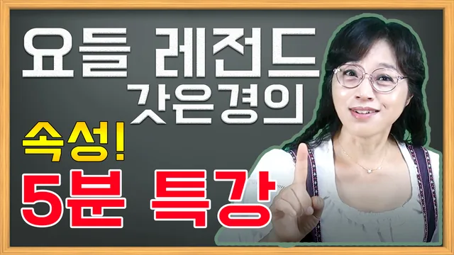
#35:28[레전드 요들송 강좌] 단 5분이면, 여러분도 요들송 부를 수 있습니다!조회수 26만회 · 7년 전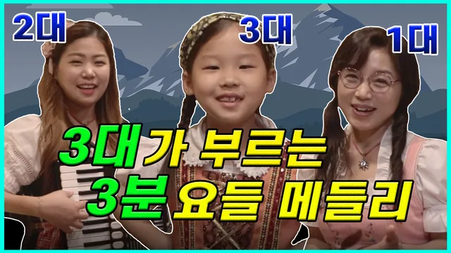
2:583대가 부르는 요들송 메들리, 아름다운 스위스 아가씨조회수 17만회 · 7년 전조회수·구독자: YouTube 공개 데이터, 2026.10.23 기준 · 썸네일을 누르면 해당 영상으로 이동합니다
채널 오픈 준비 중
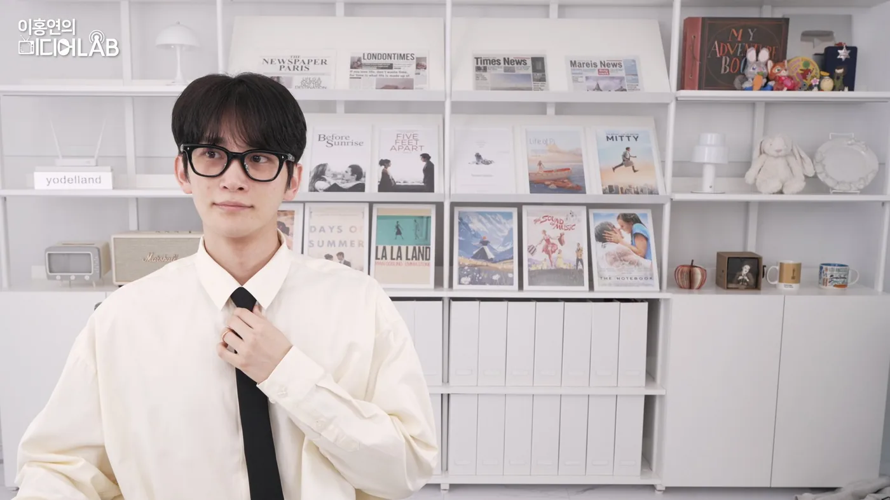
채널 준비 중유튜브 채널 《이홍연의 미디어LAB》을 준비하고 있습니다. 콘텐츠와 플랫폼, 통신 산업에서 지금 일어나는 일을 현장 경험과 데이터로 풀어낼 예정입니다.
제목 카피와 화면 구성을 직접 기획합니다 · 2026
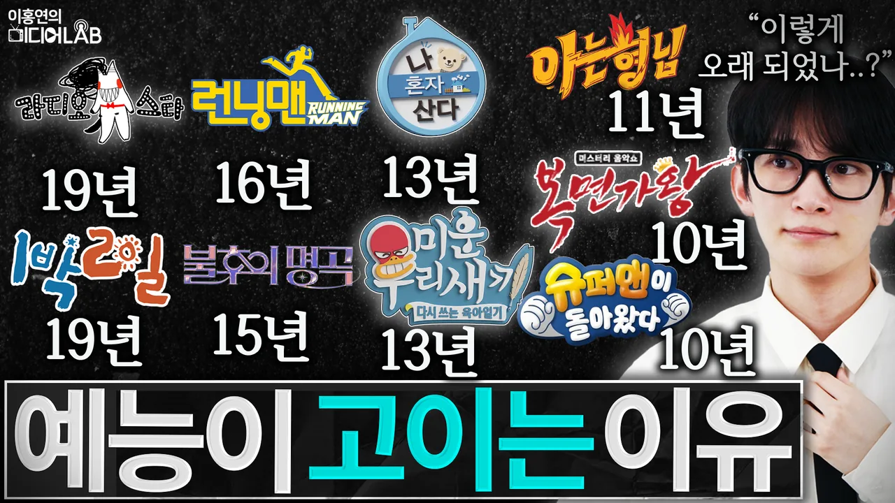

EBS 펭수 · MBC 〈마이 리틀 텔레비전〉 · MBN · tvN · 아프리카TV 도아TV
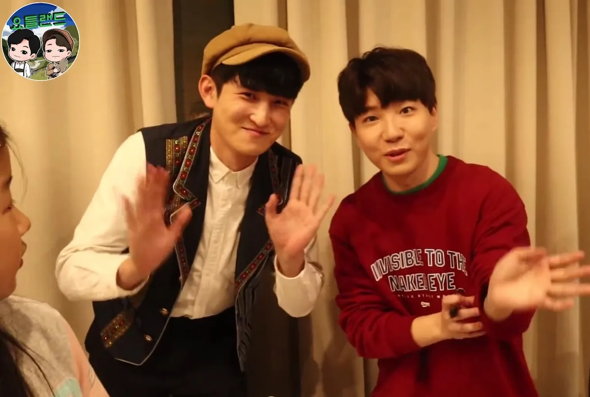
영상 보기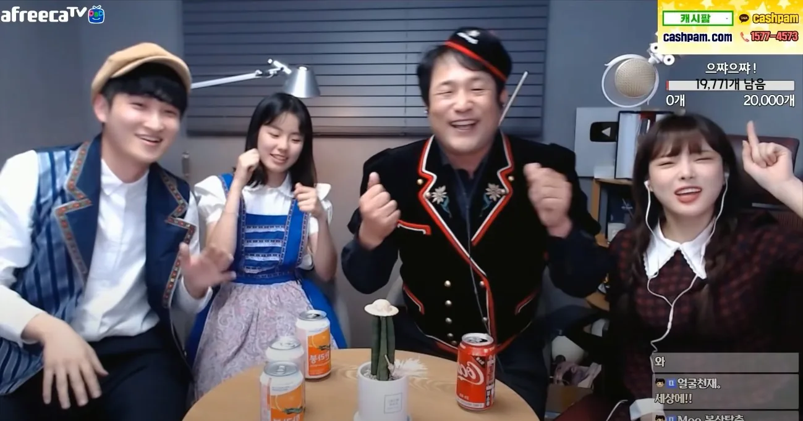
영상 보기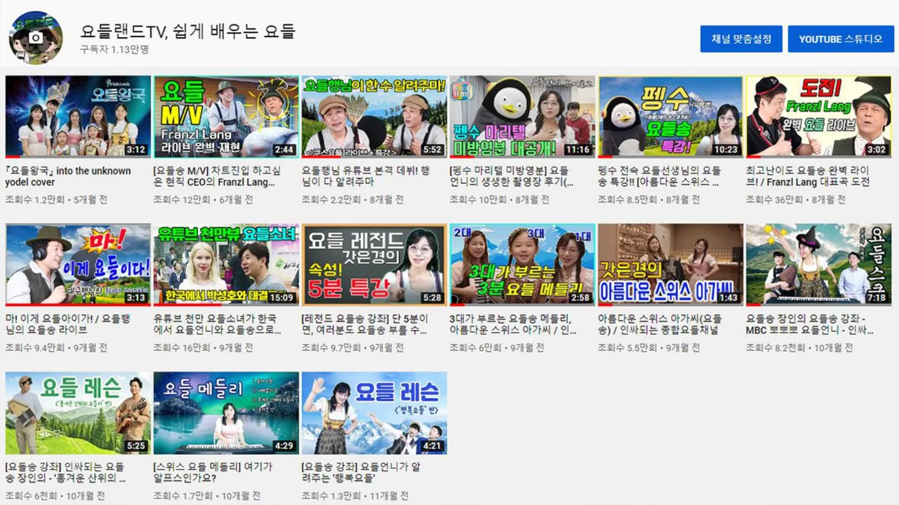
채널 보기직접 운영하던 유튜브 채널의 성과를 인정받아 영업팀에서 마케팅 조직으로 옮겼습니다. 구성원이 기획·촬영·출연·편집까지 맡는 임플로이언서(Employeencer) 방식으로 틱톡 채널, 라이브커머스, 중간광고, 상품 런칭 콘텐츠를 만들었습니다.
58편 · 2021.03–09
파일럿 7명에서 출발
2020.08–2023.05 누적
운영 6개월 만 · 2021.09
모든 수치는 사내 보고서·캡처 기준
 틱톡 보기
틱톡 보기
2월 파일럿 12편의 조회수는 1,300회, 팔로워는 7명이었습니다. 상품 광고형이 통하지 않는다는 걸 확인하고 3월 〈브로비와 선배들〉로 다시 시작했습니다. 구성원이 퀴즈·놀이형 콘텐츠에 직접 출연하자 100만 회를 넘는 영상이 나왔고, 6개월 만에 통신·OTT 기업 채널 중 3위에 올랐습니다.
2021년 CEO SR 추천 사례. 업계 1위 채널은 같은 성장에 18개월간 약 4.5억 원의 광고비를 썼습니다(사내 비교 자료).

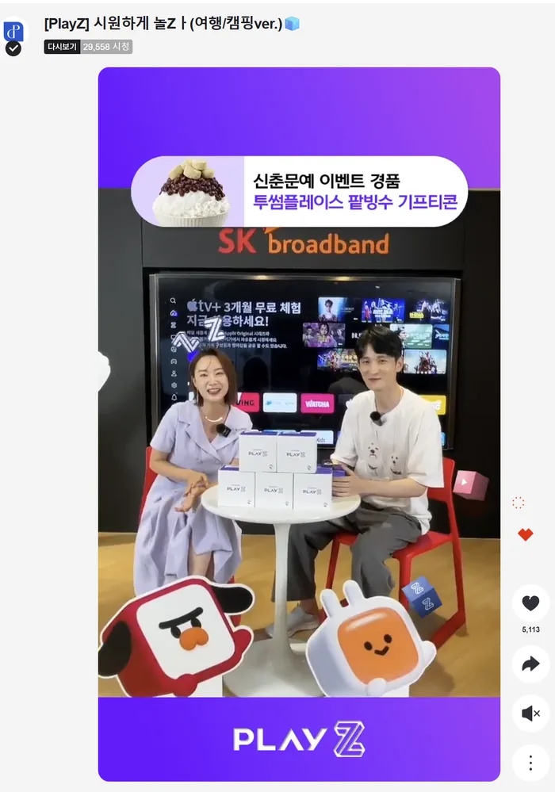
다시보기OTT 이용률이 가장 높은 2030세대를 겨냥해 소구 포인트를 뽑고, 카피와 큐시트를 쓰고, 네이버 쇼핑라이브 방송 진행까지 맡았습니다.
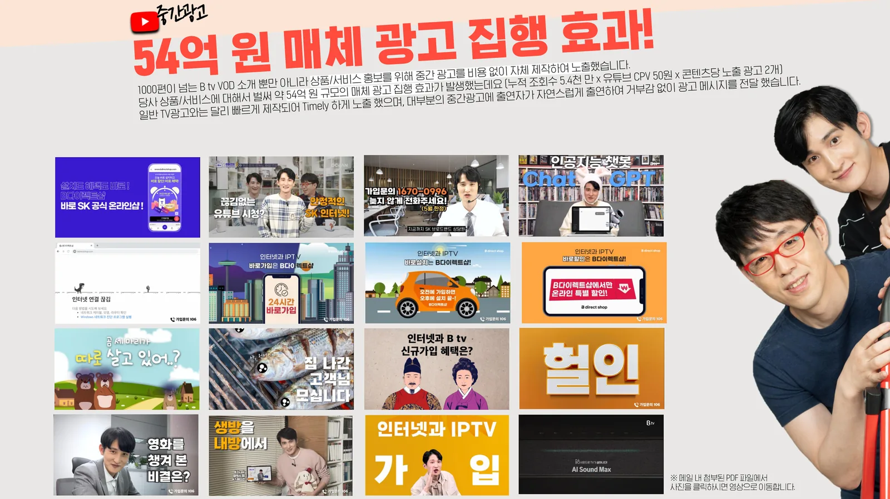
B tv 콘텐츠의 중간광고를 직접 기획·제작하고 출연해 상품과 서비스를 알렸습니다. 출연자가 자연스럽게 등장해 거부감 없이 메시지를 전했고, 일반 TV 광고보다 훨씬 빨리 만들어 시의성 있게 노출했습니다.
산식: 누적 조회수 5,417만(2020.08–2023.05) × CPV 50원 × 콘텐츠당 광고 2개. 2022년 조회당 비용은 일반 광고보다 31% 낮았습니다.
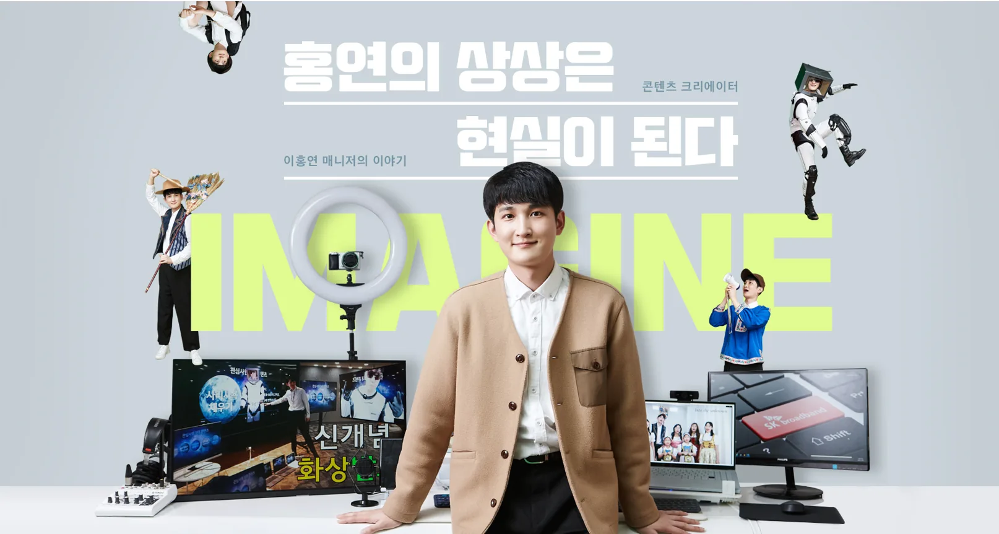
사내 웹진 B log Vol.63 커버스토리 「홍연의 상상은 현실이 된다」에 소개됐습니다. B tv pop 런칭 블로그 출연 ↗, AI 셋톱박스 'AI4 Vision' 소개 영상 진행 등 상품 홍보의 간판 역할도 맡았습니다.
생명·손해보험사와 저축은행 같은 제2금융권 고객을 1:1로 맡았습니다. 전용회선, 콜센터 인프라(IPCC), 전국 지점망을 고객사의 업종과 통신 환경에 맞게 설계해 제안했고, 견적부터 구축·개통, 24시간 장애 대응까지 한 고객을 끝까지 책임졌습니다.

8년 장기계약. 경쟁사가 오래 점유하던 고객사를 한 건의 계약으로 전환했습니다. RFP 접수 18일 만에 우선협상대상자로 선정돼 CEO SR에 추천됐고, 사내 수주사례 발표 무대에 섰습니다.
2018.08.06 → 08.24
5% 미만에서 전환
대형 손해보험사 · 2020
제2금융권 · 2018
업종과 통신 환경을 분석해 전용회선·전송망·콜센터 인프라를 설계하고, RFP 단계부터 참여해 제안했습니다.
키맨 발굴과 견적부터 청약, 네트워크 구축, 개통, 청구까지 전 과정을 직접 챙겼습니다.
대형 손해보험사 전국 지점·대리점 2,336회선을 SKB 인터넷으로 전환하는 영업을 총괄했습니다.
저축은행 그룹웨어, 클라우드 PC(VDI) 등 솔루션 업체와 협업해 금융 고객 맞춤 패키지를 제안했습니다.
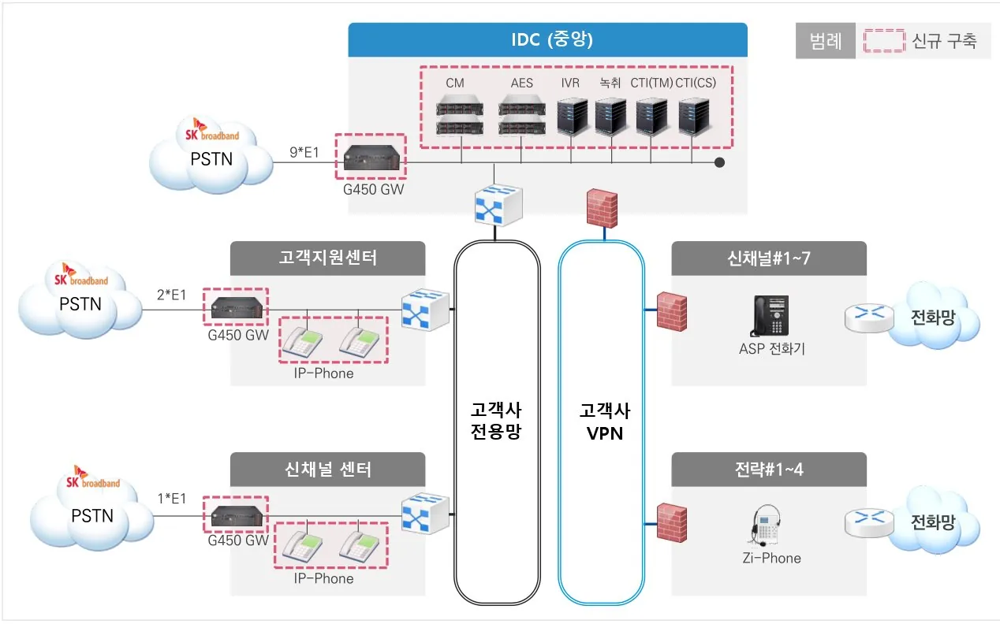
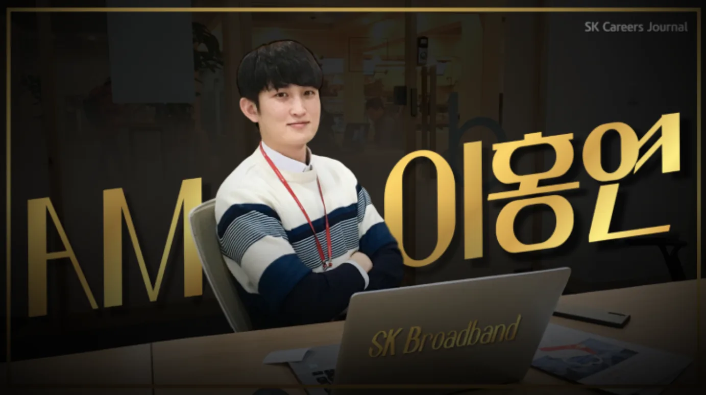
기사 보기SK브로드밴드에서 8년을 보낸 뒤 2025년 가을 연세대 정보대학원 콘텐츠·플랫폼 비즈니스 전공에 입학했습니다. 플랫폼 경제, 데이터 분석, AI 정책, 생성형 AI UX를 공부하며 'AI가 어떤 브랜드와 채널을 골라 주는가'를 연구합니다.
2025-2 ~ 2026-2, 3개 학기
논문 발제, 기업 분석, 프로포절
ChatGPT·Gemini·구글 2종·네이버 2종
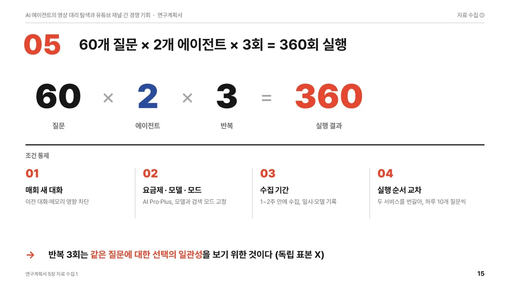
이용자가 AI 에이전트에게 영상 탐색을 맡길 때 어떤 규모의 채널이 노출 기회를 얻는지 보는 블랙박스 감사 연구입니다. YouTube를 보유한 구글의 Gemini와 OpenAI의 ChatGPT를 비교합니다.
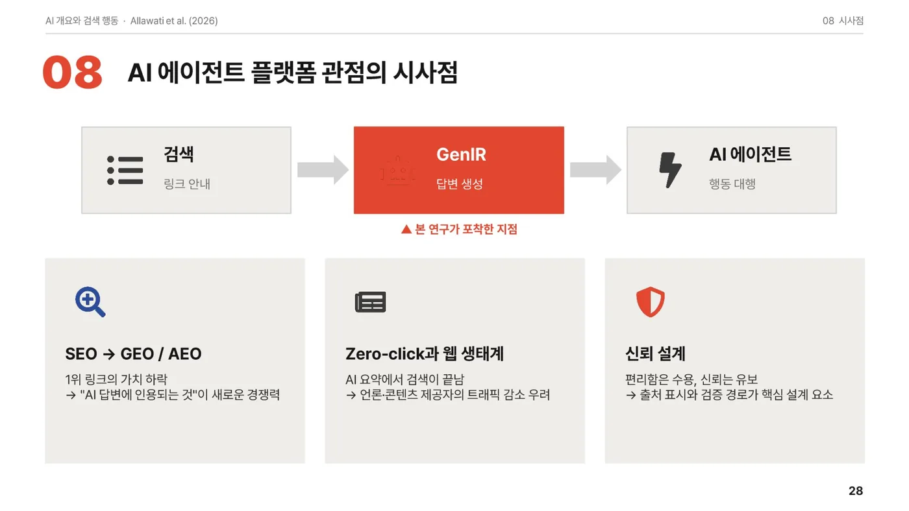
AI 개요(AI Overviews) 시선추적 연구를 분석해 SEO → GEO·AEO, 제로클릭, 출처 표시의 신뢰 설계를 정리했습니다. 6개 AI 검색 엔진의 브랜드 인용 측정 실험을 준비하고 있습니다.
영상 생성 AI로 제작비가 크게 떨어진 상황에서 같은 정산 규칙이 여전히 공정한지 묻는 혼합연구 설계입니다. 설문 150~200명, 채널 실측 약 60명, 심층 인터뷰 13~15명으로 구성했습니다.
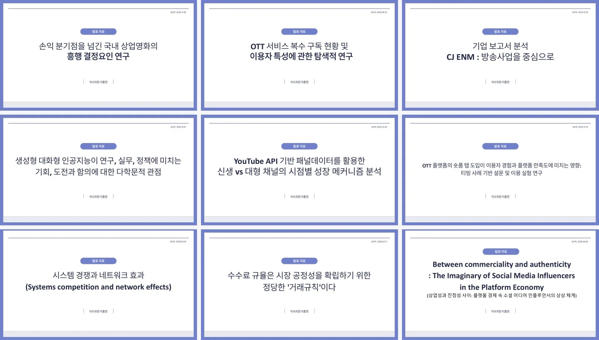
AI가 콘텐츠를 고르는 시대, 개인과 기업이 각자의 자리에서 무엇을 바꿔야 하는지 다룹니다. 대상과 시간에 맞춰 특강, 실습 워크숍, 연속 과정으로 구성합니다.
기업 임직원(마케팅·홍보·영업·신입), 경영진, 공공기관, 대학·대학원
오프라인·온라인 특강, 실습 워크숍, 2~4회 연속 과정
교육 목적과 인원에 맞춰 프로그램을 조합하고 사례를 바꿉니다
인공지능(AI) 에이전트와 미디어 플랫폼 생태계 변화
근거GEO SaaS 기업 체인시프트 콘텐츠 디렉터 · 연세대 정보대학원 AI 검색·AI 에이전트 연구
소재 기획부터 생성형 AI 제작 → SNS 채널 배포·자동화까지
근거《이홍연의 미디어LAB》과 체인시프트 숏폼을 Claude·HyperFrames 기반으로 직접 제작
체인시프트 콘텐츠 제작 시스템 · 9단계 · 사람은 판단과 승인만
기획·대본·작업 지휘는 Claude가 맡고, ChatGPT는 결과를 교차 검토합니다.
도입 검토vidIQTrends MCP
자동 수집 → 사람이 채택
자동 초안 → 사람 승인
샷리스트·견적 → 사람 승인 → 생성
자동 컷·렌더 → 사람이 미리보기 승인
도입 검토MirraAdobe 커넥터
자동 시안 → 사람이 선택
사람Claude 반복 작업 → 사람이 마감
도입 검토OpusClipCapCut
자동 → 사람이 하이라이트 승인
도입 검토MirraManyChatMetricool
비공개 예약 업로드 → 사람이 공개
도입 검토Mirra
자동 초안 → 사람이 발행
주제 선정부터 후킹, 출연, 썸네일, 데이터 분석까지
근거《B tv 이동진의 파이아키아》 공동 기획·메인 MC 4년 · 약 300편 · 누적 7,000만 회
'광고'가 아닌 '놀이'로 받아들이는 PULL 콘텐츠
근거SK브로드밴드 틱톡 광고비 0원 · 58편 1,960만 회 · 6개월 만에 통신·OTT 기업 채널 3위
유료방송·OTT·유튜브의 수익 구조와 경쟁 구도
근거SK브로드밴드 B tv 실무 · 연세대 콘텐츠·플랫폼 비즈니스 전공 · 《이홍연의 미디어LAB》 산업 해설
직원이 만드는 진성 콘텐츠와 성과형 콘텐츠
근거자체 제작 중간광고 약 54억 원 매체 효과 · PLAY Z 라이브커머스 진행 · toktokTV Best Creator 대상
통신·네트워크 진화에 따른 미디어 플랫폼 비즈니스 모델
근거SK브로드밴드 ICT·네트워크 B2B 컨설턴트 4년 · 105억 원 규모 신규 수주
교육 대상, 인원, 시간, 원하는 결과를 알려 주시면 사례와 실습을 조정한 제안서를 보내 드립니다.
기업 교육, 특강, 워크숍, 콘텐츠·GEO 자문 문의를 받습니다.